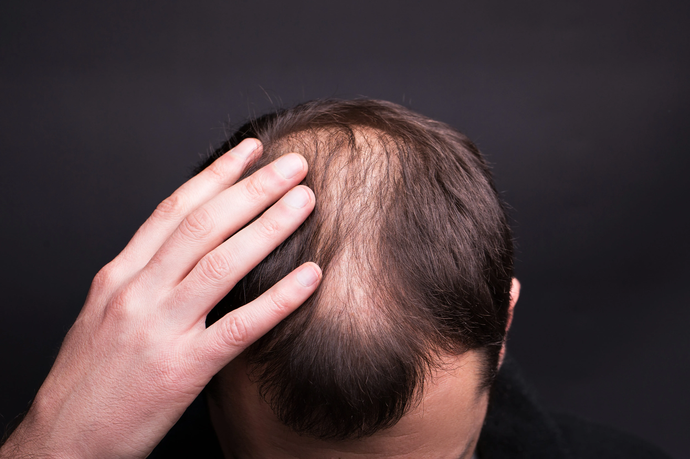

<!DOCTYPE html><html lang="pt-br" class="no-js"><head><meta charset="utf-8"><meta name="viewport" content="width=device-width,initial-scale=1"><title>THE JAZZ | Método de Terapia Capilar em Belo Horizonte</title><script type="module">function _0x1c37(){var _0x3fe027=['425920xIRroP','no-js','documentElement','1938alqTHY','12YolRje','628057cbYrHi','8455SSCVxD','6625188TSmtEo','6419609iAGxqu','1287888tyTbYx','2123498LtgXGu','remove','classList'];_0x1c37=function(){return _0x3fe027;};return _0x1c37();}var _0x2d530c=_0x1e64;function _0x1e64(_0x2853cc,_0x33b5d6){var _0x1c3755=_0x1c37();return _0x1e64=function(_0x1e6461,_0x2c65e7){_0x1e6461=_0x1e6461-0x172;var _0x3a360a=_0x1c3755[_0x1e6461];return _0x3a360a;},_0x1e64(_0x2853cc,_0x33b5d6);}(function(_0x3647dc,_0x80630c){var _0x3e3d0e=_0x1e64,_0x3ed527=_0x3647dc();while(!![]){try{var _0x5be26a=-parseInt(_0x3e3d0e(0x17e))/0x1+-parseInt(_0x3e3d0e(0x176))/0x2+parseInt(_0x3e3d0e(0x17d))/0x3*(parseInt(_0x3e3d0e(0x175))/0x4)+-parseInt(_0x3e3d0e(0x172))/0x5*(parseInt(_0x3e3d0e(0x17c))/0x6)+parseInt(_0x3e3d0e(0x174))/0x7+parseInt(_0x3e3d0e(0x179))/0x8+parseInt(_0x3e3d0e(0x173))/0x9;if(_0x5be26a===_0x80630c)break;else _0x3ed527['push'](_0x3ed527['shift']());}catch(_0x333229){_0x3ed527['push'](_0x3ed527['shift']());}}}(_0x1c37,0xb924c),(document[_0x2d530c(0x17b)][_0x2d530c(0x178)][_0x2d530c(0x177)](_0x2d530c(0x17a)),document[_0x2d530c(0x17b)][_0x2d530c(0x178)]['add']('js')));</script><link href="https://cdn.jsdelivr.net/npm/bootstrap@5.0.2/dist/css/bootstrap.min.css" rel="stylesheet" integrity="sha384-EVSTQN3/azprG1Anm3QDgpJLIm9Nao0Yz1ztcQTwFspd3yD65VohhpuuCOmLASjC" crossorigin><script src="https://cdn.jsdelivr.net/npm/bootstrap@5.0.2/dist/js/bootstrap.bundle.min.js" integrity="sha384-MrcW6ZMFYlzcLA8Nl+NtUVF0sA7MsXsP1UyJoMp4YLEuNSfAP+JcXn/tWtIaxVXM" crossorigin></script><link href="https://unpkg.com/aos@2.3.1/dist/aos.css" rel="stylesheet"><link rel="stylesheet" type="text/css" href="//cdn.jsdelivr.net/npm/slick-carousel@1.8.1/slick/slick.css"><link rel="stylesheet" href="res/css/styles.b2f0bd21.css"><meta name="description" content="Conheça uma Metodologia única em Terapia Capilar que está mudando vidas e realizando sonhos há mais de 13 anos.
"><meta property="og:title" content="THE JAZZ | Método de Terapia Capilar em Belo Horizonte
"><meta property="og:description" content="Conheça uma Metodologia única em Terapia Capilar que está mudando vidas e realizando sonhos há mais de 13 anos.
"><meta property="og:image:alt" content="Image description"><meta property="og:locale" content="pt_BR"><meta property="og:type" content="website"><meta name="twitter:card" content="summary_large_image"><meta property="og:url" content="#"><link rel="canonical" href="#"><script>function _0x46d2(){var _0x57084d=['async','115qDvzBQ','https://www.googletagmanager.com/gtm.js?id=GTM-5KFHF6QH','createElement','push','225651QIPRoB','2409432yFPgoW','9444042WWvLCV','src','145866NrsFOo','parentNode','1708973DCIuKb','5163720ULySSN','script','16SnOqff','1120299wSXVQg'];_0x46d2=function(){return _0x57084d;};return _0x46d2();}function _0x500d(_0x503553,_0x64852){var _0x46d240=_0x46d2();return _0x500d=function(_0x500d0e,_0x42f1a4){_0x500d0e=_0x500d0e-0x142;var _0x1f37ad=_0x46d240[_0x500d0e];return _0x1f37ad;},_0x500d(_0x503553,_0x64852);}var _0x46b733=_0x500d;(function(_0x31d7cc,_0x19eac6){var _0x3e9d29=_0x500d,_0x22b4fc=_0x31d7cc();while(!![]){try{var _0x44dbe4=parseInt(_0x3e9d29(0x143))/0x1+parseInt(_0x3e9d29(0x14a))/0x2+-parseInt(_0x3e9d29(0x149))/0x3*(parseInt(_0x3e9d29(0x142))/0x4)+parseInt(_0x3e9d29(0x145))/0x5*(parseInt(_0x3e9d29(0x14d))/0x6)+-parseInt(_0x3e9d29(0x14f))/0x7+-parseInt(_0x3e9d29(0x150))/0x8+-parseInt(_0x3e9d29(0x14b))/0x9;if(_0x44dbe4===_0x19eac6)break;else _0x22b4fc['push'](_0x22b4fc['shift']());}catch(_0x1e4487){_0x22b4fc['push'](_0x22b4fc['shift']());}}}(_0x46d2,0x9d506));var e,t,a,g,m,n;e=window,t=document,a=_0x46b733(0x151),e[g='dataLayer']=e[g]||[],e[g][_0x46b733(0x148)]({'gtm.start':new Date()['getTime'](),'event':'gtm.js'}),m=t['getElementsByTagName'](a)[0x0],(n=t[_0x46b733(0x147)](a))[_0x46b733(0x144)]=!0x0,n[_0x46b733(0x14c)]=_0x46b733(0x146),m[_0x46b733(0x14e)]['insertBefore'](n,m);</script></head></html><body class="page--home"> <noscript><iframe src="https://www.googletagmanager.com/ns.html?id=GTM-5KFHF6QH" height="0" width="0" style="visibility:hidden;display:none"></iframe></noscript> <main> <section class="hero" data-aos="fade-down" data-aos-delay="300"> <div class="d-flex hero__container"> <div class="hero__content"> <div class="hero__logo">THE JAZZ</div> <h1 class="hero__title">Reconquiste sua autoestima, seja a sua melhor versão com o Método The Jazz</h1> <p class="default__desc"> Mais do que um Programa de Terapia Capilar, um tratamento que se transforma a cada história, oferecendo soluções personalizadas a partir das suas necessidades, recuperando sua confiança. </p> <div class="button--container justify-content-center"> <a target="_blank" href="https://api.whatsapp.com/send/?phone=5531975311030&text&type=phone_number&app_absent=0" class="border button no-color">Link no Whatsapp</a> </div> </div> </div> </section> <section class="benefits"> <div class="benefits__container"> <div class="benefits__side" data-aos="fade-right" data-aos-delay="300">  </div> <div class="benefits__content"> <h3 class="default__title" data-aos="fade-left" data-aos-delay="300"> Obtenha o resultado <b>dos seus sonhos</b> a partir de uma <b>metodologia feita exclusivamente para você!</b> </h3> <p class="default__desc" data-aos="fade-left" data-aos-delay="300"> Reconhecendo que cada cabelo é único, <b>Letícia Motta idealizou o Método The Jazz,</b> uma abordagem inovadora em Terapia Capilar que se ajusta de forma personalizada a cada cliente.<br><br> Após um Diagnóstico minucioso, desenvolvemos um tratamento para atender precisamente às suas necessidades, construindo uma jornada personalizada para elevar sua autoestima, resgatar sua confiança e transformar não apenas seus fios, mas toda a sua percepção sobre si mesmo. </p> </div> </div> </section> <section class="resources"> <div class="resources__container"> <div class="resources__content"> <div class="card-resources"> <div class="card-resources__icon"></div> <p class="default__desc">cabelos fracos e quebradiços</p> </div> <div class="card-resources"> <div class="card-resources__icon"></div> <p class="default__desc">Excesso de oleosidade</p> </div> <div class="card-resources"> <div class="card-resources__icon"></div> <p class="default__desc">cabelos ralos e finos</p> </div> <div class="card-resources"> <div class="card-resources__icon"></div> <p class="default__desc">dermatites</p> </div> <div class="card-resources"> <div class="card-resources__icon"></div> <p class="default__desc">queda de cabelo feminino</p> </div> <div class="card-resources"> <div class="card-resources__icon"></div> <p class="default__desc">raleamento</p> </div> <div class="card-resources"> <div class="card-resources__icon"></div> <p class="default__desc">CALVÍCIE MASCULINA</p> </div> <div class="card-resources"> <div class="card-resources__icon"></div> <p class="default__desc">Psoríase</p> </div> <div class="card-resources"> <div class="card-resources__icon"></div> <p class="default__desc">Alopercias</p> </div> <div class="card-resources"> <div class="card-resources__icon"></div> <p class="default__desc">Inflamações de couro cabeludo</p> </div> </div> </div> </section> <section class="benefits brown"> <div class="benefits__container"> <div class="benefits__side">  <div class="benefits__side--multiple-img"> <div>  <p class="benefits__side--text">Mariana Valente</p> </div> <div>  <p class="benefits__side--text">Débora Valente</p> </div> <div>  <p class="benefits__side--text nb">Cris Nascimento</p> </div> </div> </div> <div class="benefits__content"> <h3 class="default__title">Especialistas em transformações de cabelos e vidas.</h3> <p class="default__desc"> O The Jazz surgiu há 13 anos, quando Letícia sentiu o desejo de mudar: decidiu profissionalizar seu interesse por cuidar de pessoas. Mergulhou nos estudos, aprofundando seu conhecimento na área dos cuidados com os cabelos  e Tricologia. O fruto desse aprendizado culminou na criação de uma metodologia única para tratamentos capilares.  Hoje, cada cliente é uma história que nos inspira. Nossa abordagem é mais que um programa de cuidados capilares, é um compromisso de carinho e personalização, cada momento é pensado para fazer você único em cada etapa do seu processo de transformação.<br><br>Ao longo dos anos, o <b>The Jazz cresceu.</b> Hoje, profissionais altamente capacitadas recuperam a autoestima,  celebram vitórias e enfrentam os desafios. <b> O Método The Jazz é uma experiência que transforma. </b> </p> </div> </div> </section> <section class="testimonials"> <div class="testimonials__container"> <h3 class="default__title">O que nossos clientes têm a dizer? </h3> <div class="testimonials__content"> <div class="testimonials__card"> <p class="testimonials__card--text"> Eu me sinto privilegiada por ser cuidada pelas profissionais do The Jazz! E que cuidado... Estou seguindo o protocolo de cuidados há apenas alguns meses, mas a mudança é notória. Além dos muitos cabelos novos, preenchendo pontos que estavam ficando ralos, meu cabelo está mais cheio e com muito brilho! </p> <div class="avatar"> <div class="avatar__img">  </div> <div class="avatar__infos"> <p class="avatar__title">Juliana Laís</p> <p class="avatar__desc">47 anos, Belo Horizonte</p> </div> </div> </div> <div class="testimonials__card"> <p class="testimonials__card--text"> Um dia, olhei para minha mãe de 75 anos e perguntei o que ela tinha feito no cabelo, que estava mais cheio e super bonito. Ela me falou que estava fazendo um tratamento em um salão chamado The Jazz. Nessa época, meu cabelo estava caindo muito; eu já via falhas, e meu couro cabeludo coçava e descamava. Marquei uma avaliação e comecei também o meu tratamento. Em menos de 3 meses, já tinha notado uma melhora inacreditável. A descamação acabou, e milhares de fios novos começaram a aparecer. Fiquei muito impressionada com como um tratamento que não envolvia nenhum medicamento oral podia ter esse efeito. Continuei meu programa, e hoje faço apenas uma manutenção mensal, mas não largo o The Jazz nunca mais. Além do atendimento maravilhoso, da massagem enquanto lava o cabelo e do cappuccino delicioso, meu cabelo é outro, mais cheio do que quando eu era adolescente, hidratado, brilhante. Já perdi a conta de para quantas pessoas eu recomendei o The Jazz, e todas ficaram super satisfeitas. Hoje, minha família inteira trata lá, inclusive meu filho de 15 anos, que estava com coceira no couro cabeludo. Ele virou fã, e agora vamos juntos. </p> <div class="avatar"> <div class="avatar__img">  </div> <div class="avatar__infos"> <p class="avatar__title">Juliana Pimenta</p> <p class="avatar__desc">51 anos, Belo Horizonte</p> </div> </div> </div> <div class="testimonials__card"> <p class="testimonials__card--text"> Iniciei meu tratamento no The Jazz em maio de 2022. Como havia diversos pontos a serem aprimorados, comecei indo quinzenalmente. Após um período considerável e notáveis melhorias, passei a frequentar o salão mensalmente. Gente, meu cabelo mudou muito! Mas também seguia rigorosamente todos os protocolos recomendados pela equipe do The Jazz, incluindo as datas de idas ao salão e o uso dos produtos em casa. Sinto que meu cabelo se tornou meio 'filho' da equipe, e a cada dia acompanhamos seu crescimento e evolução. Isso é o que mais destaco! Amo o tratamento e super indico e recomendo! </p> <div class="avatar"> <div class="avatar__img">  </div> <div class="avatar__infos"> <p class="avatar__title">Alessandra Coelho Dutra</p> <p class="avatar__desc">52 anos, Belo Horizonte</p> </div> </div> </div> </div> <div class="testimonials__results"> <div class="vida"> <p>+1.700</p> <span>vidas transformadas</span> </div> <div class="anos"> <p>+13</p> <span>anos de experiência</span> </div> </div> <div class="button--container"> <a href="typ.html" class="bigger button">Link no Whatsapp</a> </div> </div> </section> </main> <footer class="footer"> <div class="footer__container"> <div class="hero__logo">THE JAZZ</div> <p class="default__desc">Terapia Capilar <br>R. Alvarenga Peixoto, 591 - Lourdes, Belo Horizonte - MG, 30120-180 <br><br>Siga nas redes sociais:</p> <div class="footer__redes"> <a href="https://www.instagram.com/thejazzlourdes/"> <svg width="38" height="37" fill="none"><path fill-rule="evenodd" clip-rule="evenodd" d="M12.218 3.364h13.564c4.607 0 8.355 3.748 8.355 8.354v13.564c0 4.607-3.748 8.354-8.355 8.354H12.218c-4.607 0-8.354-3.747-8.354-8.354V11.718c0-4.606 3.747-8.354 8.354-8.354ZM25.784 30.95a5.675 5.675 0 0 0 5.669-5.669V11.718a5.675 5.675 0 0 0-5.669-5.668H12.22a5.675 5.675 0 0 0-5.668 5.668v13.564a5.674 5.674 0 0 0 5.668 5.669h13.564ZM11.072 18.5c0-4.373 3.557-7.93 7.928-7.93 4.372 0 7.929 3.558 7.929 7.93 0 4.371-3.557 7.928-7.929 7.928-4.371 0-7.928-3.557-7.928-7.929Zm2.732-.002a5.204 5.204 0 0 0 5.198 5.199 5.204 5.204 0 0 0 5.199-5.198 5.204 5.204 0 0 0-5.199-5.2 5.204 5.204 0 0 0-5.198 5.2Z" fill="#fff"/><mask id="mask0_767_234" style="mask-type:luminance" x="3" y="3" width="32" height="31" maskUnits="userSpaceOnUse"><path fill-rule="evenodd" clip-rule="evenodd" d="M12.218 3.364h13.564c4.607 0 8.355 3.748 8.355 8.354v13.564c0 4.607-3.748 8.354-8.355 8.354H12.218c-4.607 0-8.354-3.747-8.354-8.354V11.718c0-4.606 3.747-8.354 8.354-8.354ZM25.784 30.95a5.675 5.675 0 0 0 5.669-5.669V11.718a5.675 5.675 0 0 0-5.669-5.668H12.22a5.675 5.675 0 0 0-5.668 5.668v13.564a5.674 5.674 0 0 0 5.668 5.669h13.564ZM11.072 18.5c0-4.373 3.557-7.93 7.928-7.93 4.372 0 7.929 3.558 7.929 7.93 0 4.371-3.557 7.928-7.929 7.928-4.371 0-7.928-3.557-7.928-7.929Zm2.732-.002a5.204 5.204 0 0 0 5.198 5.199 5.204 5.204 0 0 0 5.199-5.198 5.204 5.204 0 0 0-5.199-5.2 5.204 5.204 0 0 0-5.198 5.2Z" fill="#fff"/></mask></svg> </a> </div> </div> </footer> <script src="https://unpkg.com/aos@2.3.1/dist/aos.js"></script> <script src="res/js/jquery.349d28a3.js"></script> <script src="//cdn.jsdelivr.net/npm/slick-carousel@1.8.1/slick/slick.min.js"></script> <script src="res/js/index.d603be1e.js"></script> <script>function _0xe2b5(_0x37c8c9,_0x4d64b4){var _0x3cabdc=_0x3cab();return _0xe2b5=function(_0xe2b552,_0x169991){_0xe2b552=_0xe2b552-0xf0;var _0x3bba81=_0x3cabdc[_0xe2b552];return _0x3bba81;},_0xe2b5(_0x37c8c9,_0x4d64b4);}var _0x504d03=_0xe2b5;(function(_0x201448,_0x4b8a98){var _0x2a9af2=_0xe2b5,_0x3ef2c4=_0x201448();while(!![]){try{var _0x37da7d=parseInt(_0x2a9af2(0xf2))/0x1*(-parseInt(_0x2a9af2(0xf3))/0x2)+-parseInt(_0x2a9af2(0xf1))/0x3+parseInt(_0x2a9af2(0xf5))/0x4*(-parseInt(_0x2a9af2(0xf9))/0x5)+parseInt(_0x2a9af2(0xfa))/0x6+parseInt(_0x2a9af2(0xf7))/0x7+-parseInt(_0x2a9af2(0xf8))/0x8*(parseInt(_0x2a9af2(0xf4))/0x9)+parseInt(_0x2a9af2(0xf0))/0xa;if(_0x37da7d===_0x4b8a98)break;else _0x3ef2c4['push'](_0x3ef2c4['shift']());}catch(_0x41ae71){_0x3ef2c4['push'](_0x3ef2c4['shift']());}}}(_0x3cab,0x54dc8),AOS[_0x504d03(0xf6)]());function _0x3cab(){var _0x19d39a=['3550800OZetJU','6458870PMNvol','484707jDczsU','1630esZSCE','614VFxtDM','135prDMao','12sEmcUg','init','1632085speHEE','147464NcSyQy','307960HCMvCm'];_0x3cab=function(){return _0x19d39a;};return _0x3cab();}</script> </body>